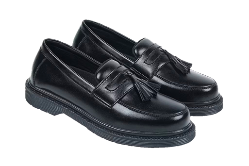

Zeintin Docmart Oxford merupakan sepatu pria bergaya klasik yang dirancang untuk memberikan kesan elegan dan profesional di berbagai kesempatan. Desainnya yang simpel namun berkarakter membuat sepatu ini cocok digunakan untuk bekerja di kantor, menghadiri acara formal, pertemuan bisnis, hingga melengkapi penampilan kasual yang lebih rapi. Siluetnya yang modern memberikan tampilan maskulin yang mudah dipadukan dengan berbagai jenis pakaian.
Pilih Ukuran